nmf_sparse9
zihao12
2019-11-08
Last updated: 2019-11-11
Checks: 6 1
Knit directory: ebpmf_demo/
This reproducible R Markdown analysis was created with workflowr (version 1.5.0). The Checks tab describes the reproducibility checks that were applied when the results were created. The Past versions tab lists the development history.
Great! Since the R Markdown file has been committed to the Git repository, you know the exact version of the code that produced these results.
Great job! The global environment was empty. Objects defined in the global environment can affect the analysis in your R Markdown file in unknown ways. For reproduciblity it’s best to always run the code in an empty environment.
The command set.seed(20190923) was run prior to running the code in the R Markdown file. Setting a seed ensures that any results that rely on randomness, e.g. subsampling or permutations, are reproducible.
Great job! Recording the operating system, R version, and package versions is critical for reproducibility.
- unnamed-chunk-2
- unnamed-chunk-4
- unnamed-chunk-6
- unnamed-chunk-9
To ensure reproducibility of the results, delete the cache directory nmf_sparse9_cache and re-run the analysis. To have workflowr automatically delete the cache directory prior to building the file, set delete_cache = TRUE when running wflow_build() or wflow_publish().
Great job! Using relative paths to the files within your workflowr project makes it easier to run your code on other machines.
Great! You are using Git for version control. Tracking code development and connecting the code version to the results is critical for reproducibility. The version displayed above was the version of the Git repository at the time these results were generated.
Note that you need to be careful to ensure that all relevant files for the analysis have been committed to Git prior to generating the results (you can use wflow_publish or wflow_git_commit). workflowr only checks the R Markdown file, but you know if there are other scripts or data files that it depends on. Below is the status of the Git repository when the results were generated:
Ignored files:
Ignored: .Rhistory
Ignored: .Rproj.user/
Ignored: analysis/nmf_sparse8_cache/
Ignored: analysis/nmf_sparse9_cache/
Untracked files:
Untracked: Rplot.png
Untracked: Untitled.Rmd
Untracked: Untitled.html
Untracked: analysis/.ipynb_checkpoints/
Untracked: analysis/Experiment_ebpmf_simple.Rmd
Untracked: analysis/demo_ebpmf_beta_gamma.Rmd
Untracked: analysis/draft.Rmd
Untracked: analysis/ebpm_gamma_mixture_experiment.Rmd
Untracked: analysis/ebpmf_demo.Rmd
Untracked: analysis/ebpmf_rank1_demo2.Rmd
Untracked: analysis/plot_g.Rmd
Untracked: analysis/softmax_experiments.ipynb
Untracked: cache/
Untracked: data/nmf_sparse8_fit_ebpmf_gm_mle.Rds
Untracked: data/nmf_sparse8_fit_ebpmf_gm_mlem.Rds
Untracked: figure/
Untracked: verbose_log_1571583163.21966.txt
Untracked: verbose_log_1571583324.71036.txt
Untracked: verbose_log_1571583741.94199.txt
Untracked: verbose_log_1571588102.40356.txt
Unstaged changes:
Modified: analysis/Compare_ebpmf_nmf.Rmd
Modified: analysis/Compare_ebvaepm_ebpm.Rmd
Modified: analysis/Experiment_ebpmf_rank1.Rmd
Modified: analysis/ebpm_demo.Rmd
Modified: analysis/nmf_sparse.Rmd
Modified: analysis/nmf_sparse2.Rmd
Modified: analysis/nmf_sparse3.Rmd
Modified: analysis/nmf_sparse6.Rmd
Modified: analysis/nmf_sparse7.Rmd
Modified: analysis/nmf_sparse8.Rmd
Modified: analysis/softmax_experiments.Rmd
Modified: data/nmf_sparse8_fit_ebpmf_gm.Rds
Note that any generated files, e.g. HTML, png, CSS, etc., are not included in this status report because it is ok for generated content to have uncommitted changes.
These are the previous versions of the R Markdown and HTML files. If you’ve configured a remote Git repository (see ?wflow_git_remote), click on the hyperlinks in the table below to view them.
| File | Version | Author | Date | Message |
|---|---|---|---|---|
| Rmd | 92a82fe | zihao12 | 2019-11-11 | update nmf_sparse 9 with different dataset adn run more iterations |
| html | 0adab17 | zihao12 | 2019-11-10 | Build site. |
| Rmd | 53b0c40 | zihao12 | 2019-11-10 | wflow_publish(“analysis/nmf_sparse9.Rmd”) |
Goal
I require that ebpm_gamma_mixture is scale invariant (explained and tested in https://zihao12.github.io/ebpmf_demo/test_ebpm_gamma_mixture_single_scale.html) and see if it can improve the fit compared with https://zihao12.github.io/ebpmf_demo/nmf_sparse8.html.
Summary
- Random initialization seems to end up in a local optimal (at best) that its ELBO is not even as good as that from MLE (init from MLE and do one iteration).
- Initialized from MLE, we can see ELBO increases (though not monotonically) with more sparsity on the right place.
- When initialized from MLE, ELBO is not increasing monotonically. In fact it seems to jump around a few different solutions with different ELBOs. (It increases monotonically when initialized from random). Worth investigating here.
rm(list = ls())
library(knitr)Warning: package 'knitr' was built under R version 3.5.2opts_knit$set(global.par = FALSE)
knitr::opts_chunk$set(autodep = TRUE)
#devtools::load_all("../ebpm")
library(ebpm)
library(NNLM)
library(ebpmf.alpha)
library(ggplot2)Warning: package 'ggplot2' was built under R version 3.5.2source("code/misc.R")
log_lik <- function(X, lam){
return(sum(dpois(x = X, lambda = lam , log = T)))
}
show_lf <- function(lf){
k = ncol(lf$L)
par(mfrow=c(2,k))
for(i in 1:k){
plot(lf$L[,i], ylab = sprintf("loadings %d", i))
}
for(i in 1:k){
plot(lf$F[,i], ylab = sprintf("factors %d", i))
}
}
compare_lf <- function(lf1, lf2, x_name, y_name){
k = ncol(lf1$L)
par(mfrow=c(2,k))
for(i in 1:k){
plot(lf1$L[,i], lf2$L[,i], main = sprintf("loading %d", i), xlab = x_name, ylab = y_name)
}
for(i in 1:k){
plot(lf1$F[,i], lf2$F[,i], main = sprintf("factor %d", i), xlab = x_name, ylab = y_name)
}
}
plot_prior_gamma_mix <- function(g, title = "main"){
## choose range of g
d = length(g$pi)
sub_mask = g$pi > 0.2/d
x_max = 5*max(g$shape[sub_mask]*g$scale[sub_mask])
x = seq(0,x_max,0.01)
y = lapply(x, FUN = pdf_gamma_mix, g = g)
plot(x, y, type = "l", xlab = "x", ylab = "pdf", main = title)
}
pdf_gamma_mix <- function(x, g){
return(sum(g$pi * dgamma(x, shape = g$shape, scale = g$scale)))
}Data
Simulate data and visualize its structure.
set.seed(123)
n = 100
p = 200
k = 2
L = matrix(0, nrow = n, ncol = k)
F = matrix(0, nrow = p, ncol = k)
## generate F in the simplex space
## first topic is has key words in 1:p/2
F[1:(p/2),1] = 20*runif(p/2)
F[(1+p/2):p,1] = 1*runif(p/2)
F[,1] = F[,1]/sum(F[,1])
## second topic is noise
F[,2] = runif(p)
F[,2] = F[,2]/sum(F[,2])
## first loading is mainly loaded onb the first topic
L[1:(n/2),1] = 3 + runif(n/2)
## second topic is noise
L[,2] = 10*runif(n)
L = diag(replicate(n, 100)) %*% L
lambda = L %*% t(F)
X = matrix(rpois(n*p, lambda = lambda), nrow = n)
image(t(X))
| Version | Author | Date |
|---|---|---|
| 0adab17 | zihao12 | 2019-11-10 |
lf_truth = poisson2multinom(F = F, L = L)
show_lf(lf_truth)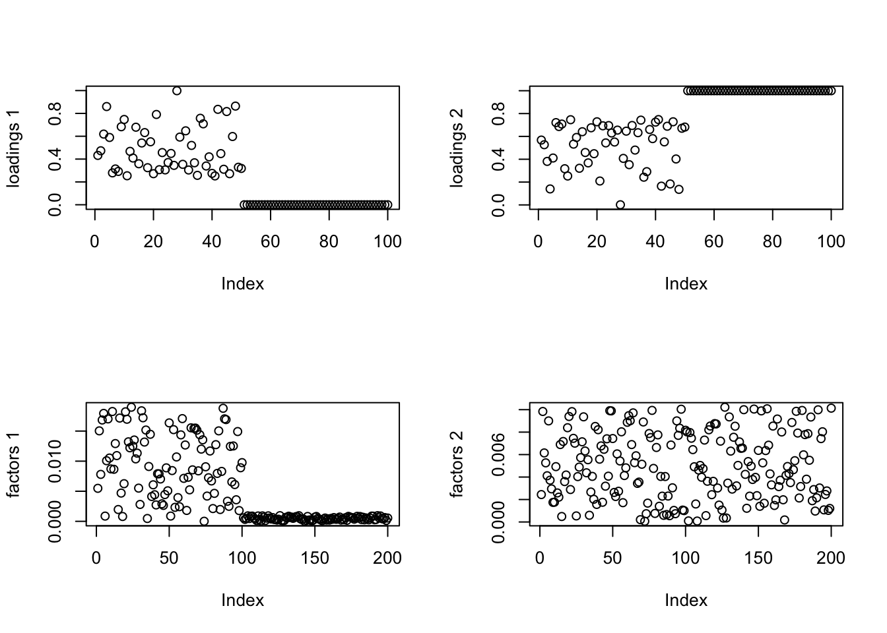
| Version | Author | Date |
|---|---|---|
| 0adab17 | zihao12 | 2019-11-10 |
## look at original loading 1
plot(L[51:100,1])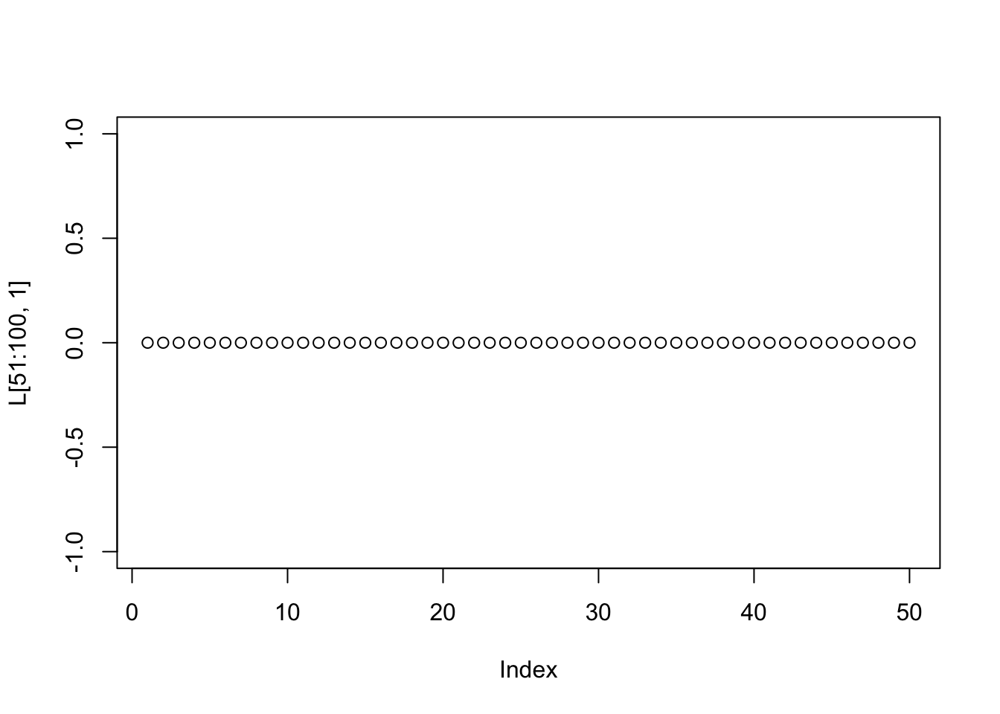
| Version | Author | Date |
|---|---|---|
| 0adab17 | zihao12 | 2019-11-10 |
MLE (EM) from random
L0 = matrix(runif(n*k), ncol = k)
F0 = matrix(runif(p*k), ncol = k)
fit_em = NNLM::nnmf(A = X, k = k,loss = "mkl", method = "lee", max.iter = 10000,
init = list(W = L0, H = t(F0)))
#fit_em = NNLM::nnmf(A = X, k = k,loss = "mkl", method = "lee", max.iter = 1000)
lf_em = poisson2multinom(L = fit_em$W, F = t(fit_em$H))
show_lf(lf = lf_em)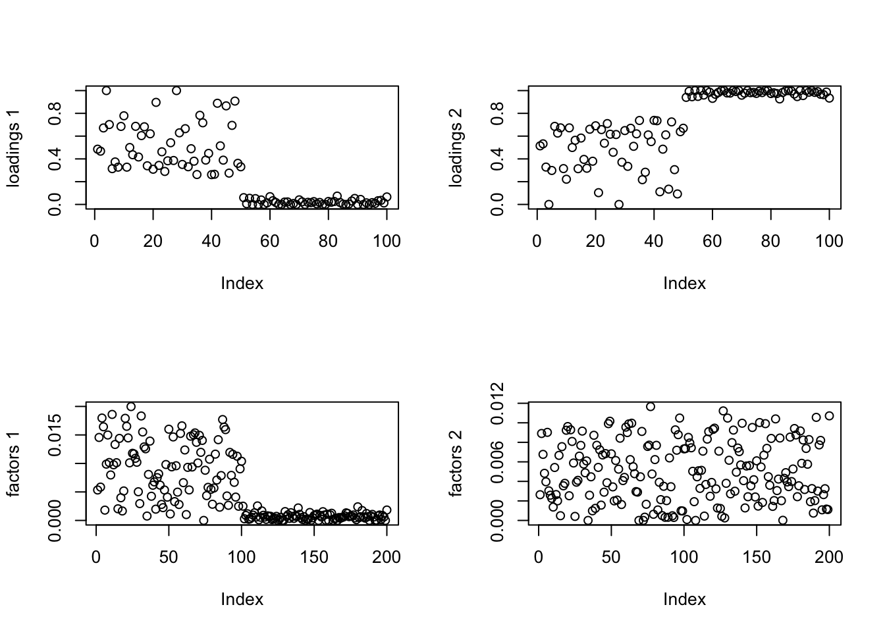
| Version | Author | Date |
|---|---|---|
| 0adab17 | zihao12 | 2019-11-10 |
compare_lf(lf_truth, lf_em, x_name = "truth", y_name = "em")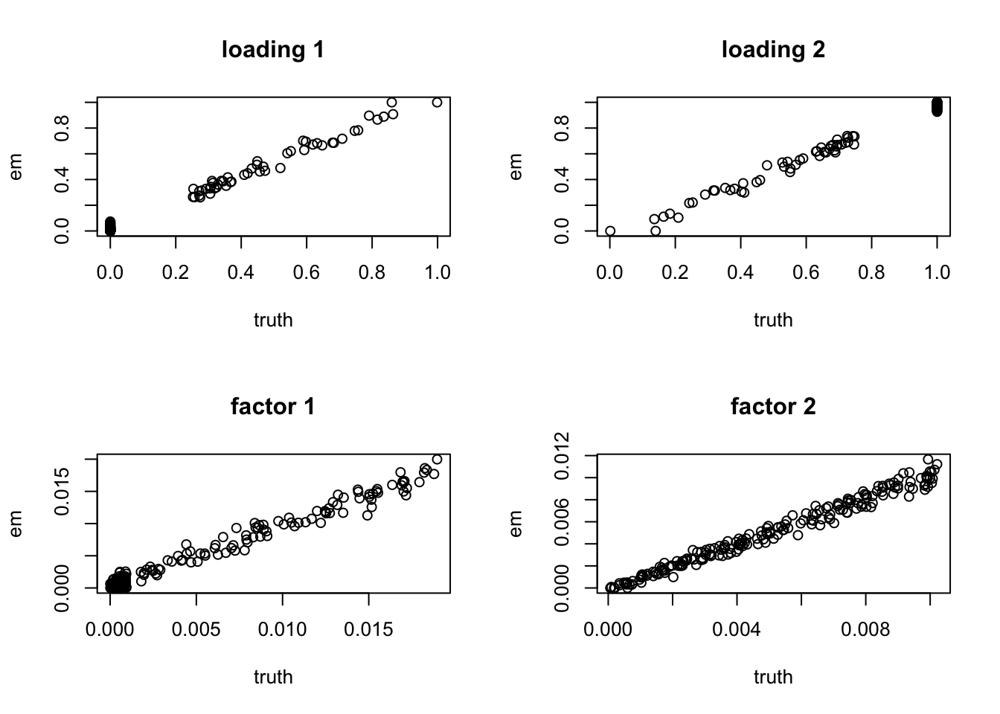
## look at loading 1 in original space
plot(fit_em$W[51:100,1])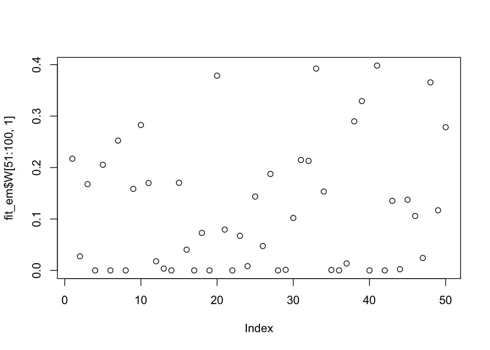
## compare with truth
plot(L[51:100, 1], fit_em$W[51:100,1])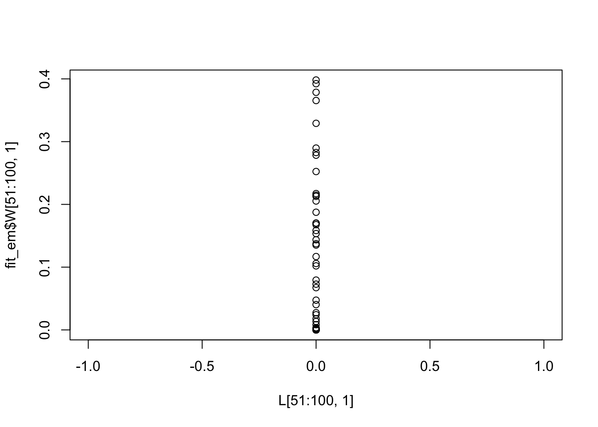
MLE gets very similar solution, except that the MLE for what should be exact 0s in loading 1 are too big. So we want to shrink those fits towards 0.
ebpmf_gamma_mixture from random
It is the same random initialization as in MLE.
qg_random = ebpmf.alpha::initialize_qg_from_LF(L0 = L0, F0 = F0)
fit_ebpmf_gm = ebpmf.alpha::ebpmf_gamma_mixture(X = X,K = k,qg = qg_random, maxiter.out = 1000, verbose = FALSE,theta_l = "max", theta_f = "max")
lf_ebpmf_gm = poisson2multinom(L = fit_ebpmf_gm$qg$qls_mean, F = fit_ebpmf_gm$qg$qfs_mean)
show_lf(lf = lf_ebpmf_gm)
| Version | Author | Date |
|---|---|---|
| 0adab17 | zihao12 | 2019-11-10 |
compare_lf(lf1 = lf_truth, lf2 = lf_ebpmf_gm, x_name = "truth", y_name = "ebpmf_gm_random")
| Version | Author | Date |
|---|---|---|
| 0adab17 | zihao12 | 2019-11-10 |
# ## take a closer look at the smaller values in loading 1
# idx = lf_truth$L[,1] < 0.2
# ## compared with truth
# plot(lf_truth$L[,1][idx], lf_ebpmf_gm$L[,1][idx])
# ## compared with truth
# plot(lf_em$L[,1][idx], lf_ebpmf_gm$L[,1][idx])Look at loading 1 in the original space
## look at loading 1 in original space
plot(fit_ebpmf_gm$qg$qls_mean[51:100,1])
## compare with truth
plot(L[51:100,1], fit_ebpmf_gm$qg$qls_mean[51:100,1], xlab = "L truth", ylab = "L ebpmf_gm_random")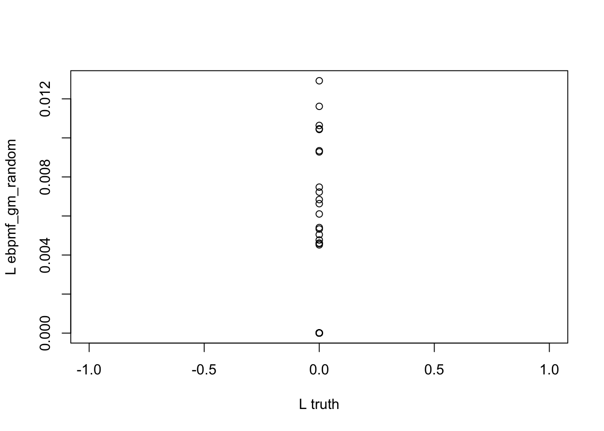
## Compare with EM
plot(fit_em$W[51:100,1], fit_ebpmf_gm$qg$qls_mean[51:100,1], xlab = "L EM", ylab = "L ebpmf_gm_random")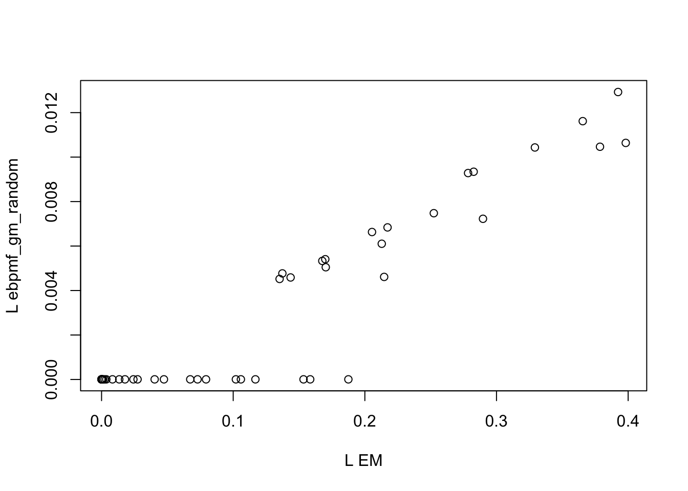 It shrinks the small values in loading 1 towards 0 which is great. But it also shrinks small values in loading 2 to 0 (which should be nonzero noise).
Let’s take a look at the \(\hat{g}\)
par(mfrow=c(1,2))
for(idx in 1:k){
plot_prior_gamma_mix(g = fit_ebpmf_gm$qg$gls[[idx]], title = sprintf("loading %d", idx))
}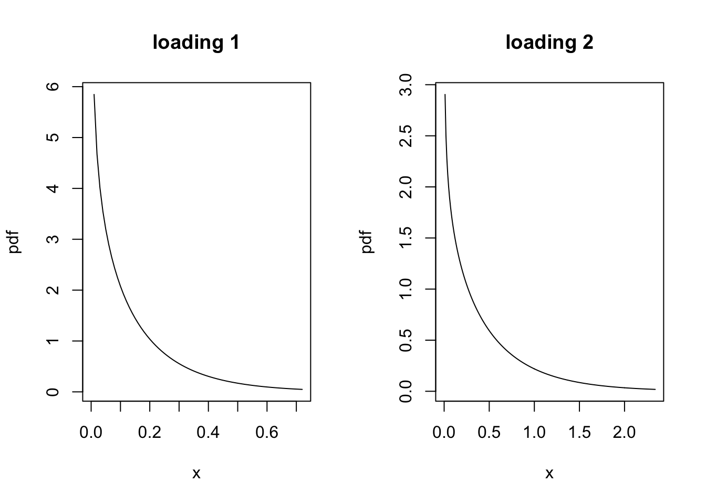
| Version | Author | Date |
|---|---|---|
| 0adab17 | zihao12 | 2019-11-10 |
for(idx in 1:k){
plot_prior_gamma_mix(g = fit_ebpmf_gm$qg$gfs[[idx]], title = sprintf("factor %d", idx))
}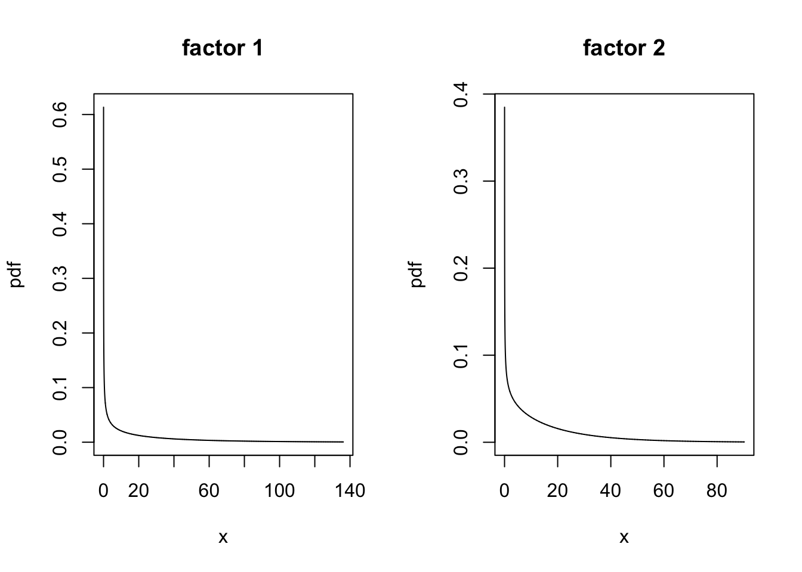
| Version | Author | Date |
|---|---|---|
| 0adab17 | zihao12 | 2019-11-10 |
ebpmf_gamma_mixture from MLE result
qg_mle = initialize_qg_from_LF(L0 = fit_em$W, F0 = t(fit_em$H))
fit_ebpmf_gm_mle = ebpmf.alpha:: ebpmf_gamma_mixture(X = X,K = k,qg = qg_mle, maxiter.out = 1000, theta_l = "max", theta_f = "max",verbose = FALSE)
lf_ebpmf_gm_mle = poisson2multinom(L = fit_ebpmf_gm_mle$qg$qls_mean, F = fit_ebpmf_gm_mle$qg$qfs_mean)
show_lf(lf = lf_ebpmf_gm_mle)
| Version | Author | Date |
|---|---|---|
| 0adab17 | zihao12 | 2019-11-10 |
compare_lf(lf1 = lf_truth, lf2 = lf_ebpmf_gm_mle, x_name = "truth", y_name = "ebpmf_gm_random")
| Version | Author | Date |
|---|---|---|
| 0adab17 | zihao12 | 2019-11-10 |
compare_lf(lf1 = lf_em, lf2 = lf_ebpmf_gm_mle, x_name = "em", y_name = "ebpmf_gm_random")
## take a closer look at the smaller values in loading 1
idx = lf_truth$L[,1] < 0.2
## compared with truth
plot(lf_truth$L[,1][idx], lf_ebpmf_gm_mle$L[,1][idx])
## compared with mle
plot(lf_em$L[,1][idx], lf_ebpmf_gm_mle$L[,1][idx])
Look at loading 1 in the original space
## look at loading 1 in original space
plot(fit_ebpmf_gm_mle$qg$qls_mean[51:100,1])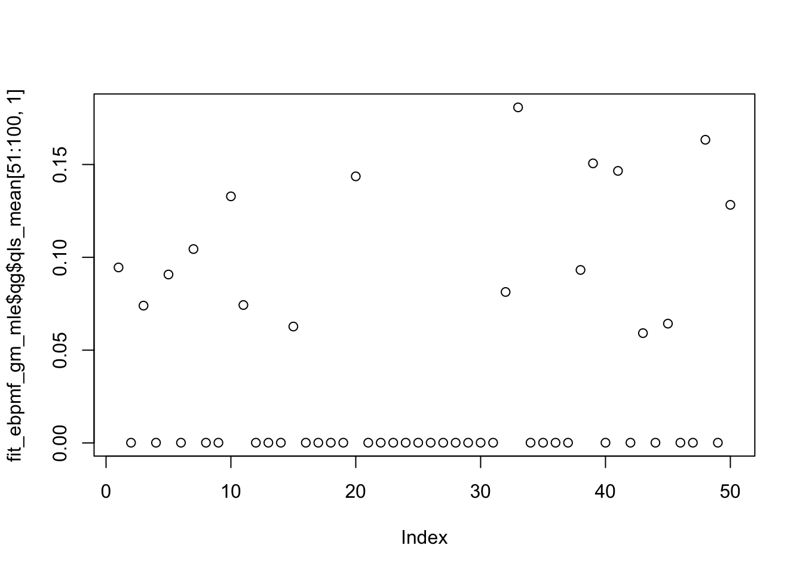
| Version | Author | Date |
|---|---|---|
| 0adab17 | zihao12 | 2019-11-10 |
## compare with truth
plot(L[51:100,1], fit_ebpmf_gm_mle$qg$qls_mean[51:100,1], xlab = "L truth", ylab = "L ebpmf_gm_mle")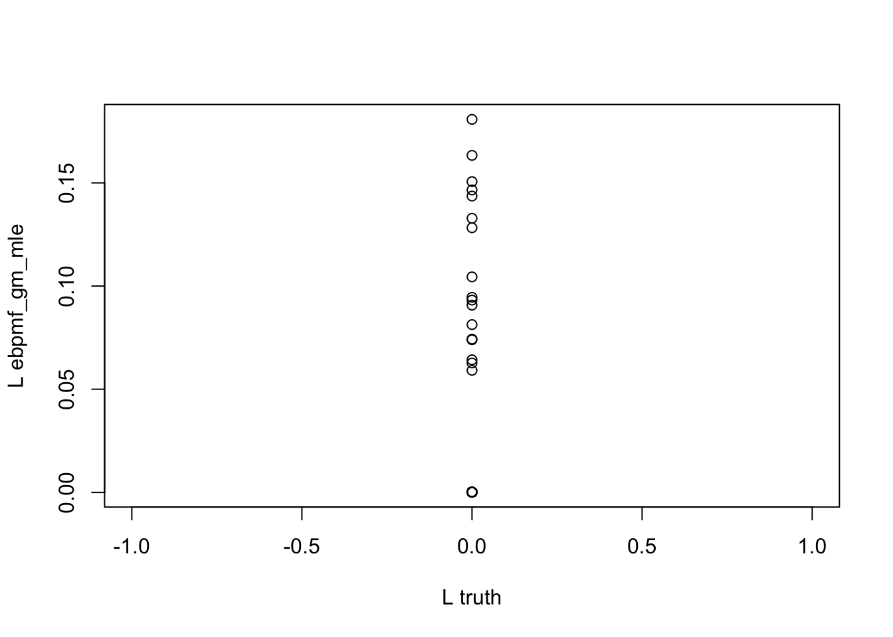
## Compare with EM
plot(fit_em$W[51:100,1], fit_ebpmf_gm_mle$qg$qls_mean[51:100,1], xlab = "L EM", ylab = "L ebpmf_gm_mle")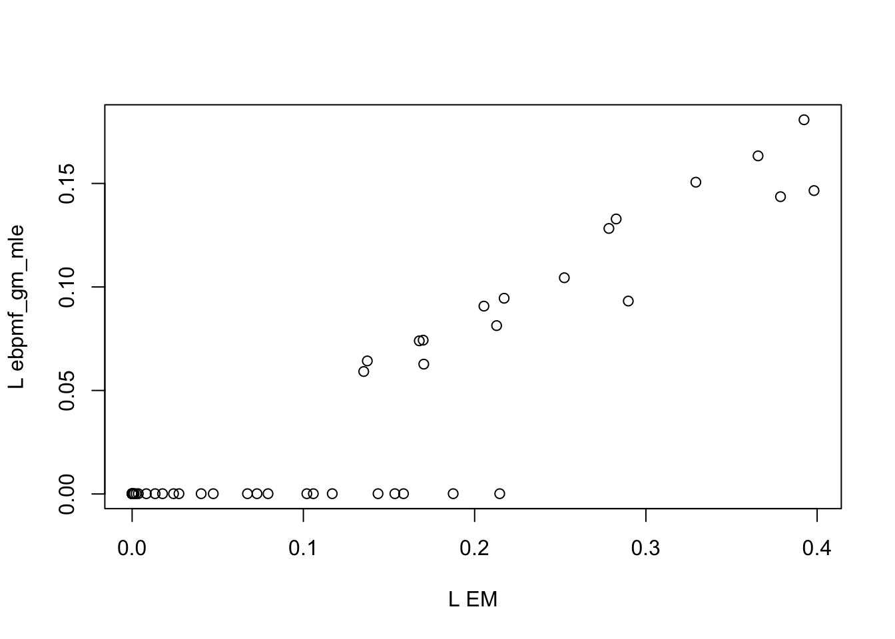 Here shrinkage is effective. It shrinks those smaller than 0.1 to 0 in loading 1.
Let’s take a look at the \(\hat{g}\)
par(mfrow=c(1,2))
for(idx in 1:k){
plot_prior_gamma_mix(g = fit_ebpmf_gm_mle$qg$gls[[idx]], title = sprintf("loading %d", idx))
}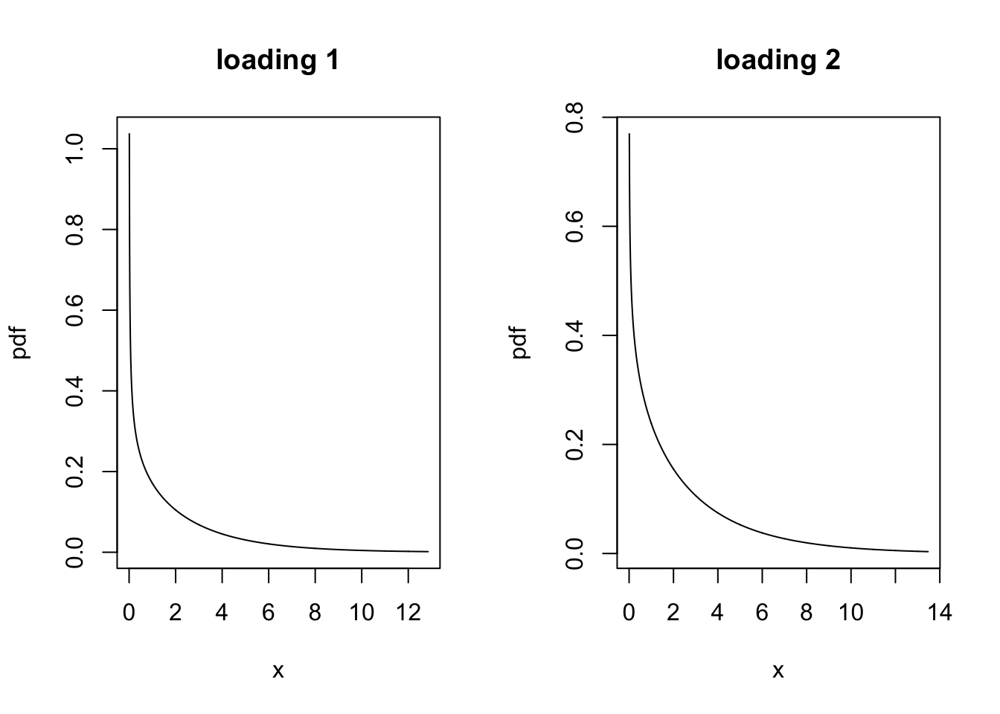
for(idx in 1:k){
plot_prior_gamma_mix(g = fit_ebpmf_gm_mle$qg$gfs[[idx]], title = sprintf("factor %d", idx))
}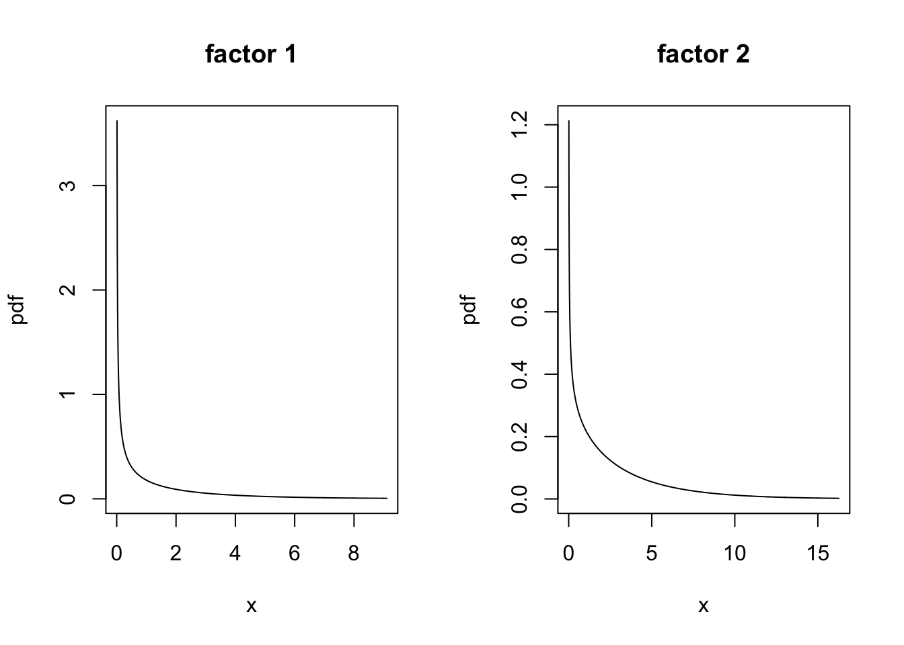
How ebpmf_gamma_mixture induces shrinkage
Start from MLE, and do one iteration and see how it shrinks \(\zeta\) (\(Z_{ijk} = X_{ij} \zeta_{ijk}\), \(\sum_k \zeta_{ijk} = 1\))
fit_ebpmf_gm_one = ebpmf.alpha:: ebpmf_gamma_mixture (X = X,K = k,qg = qg_mle, maxiter.out = 1, theta_l = "max", theta_f = "max",verbose = FALSE)
Ez_0 = get_Ez(X, qg_mle, K = k)
Ez_one = get_Ez(X, fit_ebpmf_gm_one$qg, K = k)
plot(Ez_0$zeta[,,1], Ez_one$zeta[,,1])
abline(a = 0, b = 1, col = "red")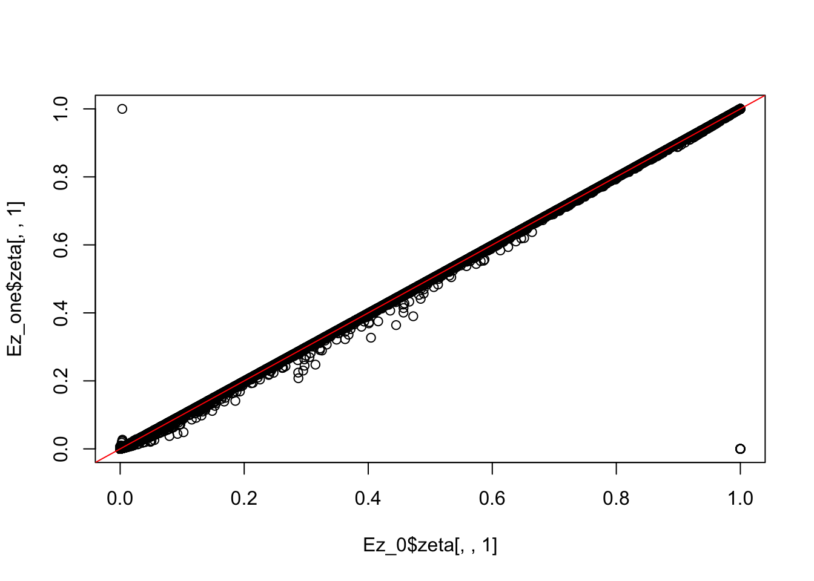
plot(Ez_0$zeta[,,2], Ez_one$zeta[,,2])
abline(a = 0, b = 1, col = "red")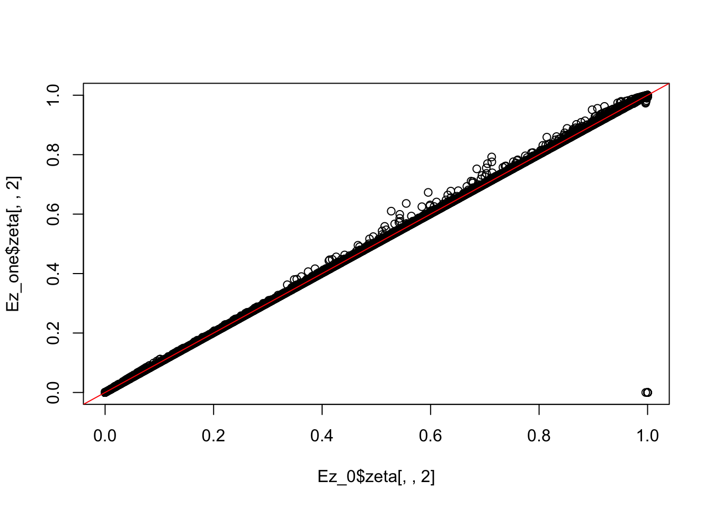 The shrinkage is not very obvious. But let’s take a look at those zeta where shrinkage is effective in loading 1. It shrinks those corresponding \(\zeta\)
## I pick j = 10 for display
idx = lf_em$L[,1] < 0.01
plot(Ez_0$zeta[idx,10,1], Ez_one$zeta[idx,10,1])
abline(a = 0, b = 1, col = "red")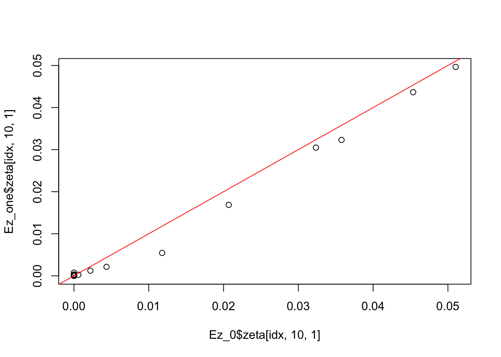
Look at ELBO
niter = length(fit_ebpmf_gm$ELBO)
## ELBO when initialized randomly
fit_ebpmf_gm$ELBO[niter][1] 34651.62## ELBO when initialized from MLE
fit_ebpmf_gm_mle$ELBO[niter][1] 34711.81## ELBO after one iteration from MLE
fit_ebpmf_gm_one$ELBO[length(fit_ebpmf_gm_one$ELBO)][1] 34660.14elbos = data.frame(iter = 1:niter, from_mle = fit_ebpmf_gm_mle$ELBO, from_random = fit_ebpmf_gm$ELBO)
ggplot(elbos)+
geom_line(aes(x = iter, y = from_mle, color = "from_mle"))+
geom_line(aes(x = iter, y = from_random, color = "from_random"))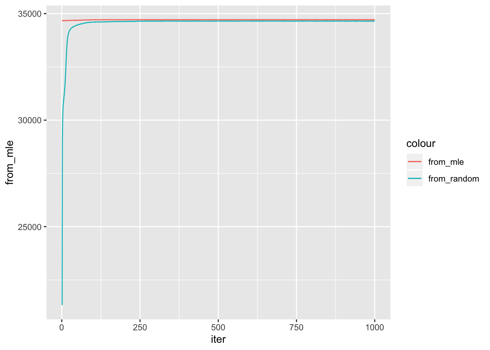
## take closer look at init from MLE
ggplot(elbos)+
geom_point(aes(x = iter, y = from_random, color = "from_random"))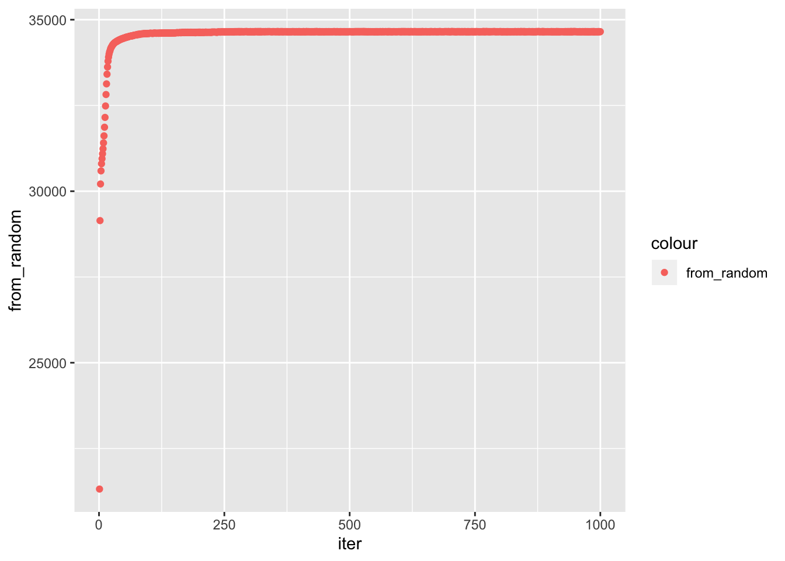
## take closer look at init from MLE
ggplot(elbos)+
geom_point(aes(x = iter, y = from_mle, color = "from_mle")) Interesting. When initialized from MLE, ELBO is clearly not monotonically increasing. It seems to be jumping between a few solutions with different ELBOs.
Interesting. When initialized from MLE, ELBO is clearly not monotonically increasing. It seems to be jumping between a few solutions with different ELBOs.
When initialized randomly, ELBO increases monotonically.
sessionInfo()R version 3.5.1 (2018-07-02)
Platform: x86_64-apple-darwin15.6.0 (64-bit)
Running under: macOS 10.14
Matrix products: default
BLAS: /Library/Frameworks/R.framework/Versions/3.5/Resources/lib/libRblas.0.dylib
LAPACK: /Library/Frameworks/R.framework/Versions/3.5/Resources/lib/libRlapack.dylib
locale:
[1] en_US.UTF-8/en_US.UTF-8/en_US.UTF-8/C/en_US.UTF-8/en_US.UTF-8
attached base packages:
[1] stats graphics grDevices utils datasets methods base
other attached packages:
[1] ggplot2_3.2.1 ebpmf.alpha_0.1.1 NNLM_0.4.2 ebpm_0.0.0.9003
[5] knitr_1.25
loaded via a namespace (and not attached):
[1] Rcpp_1.0.2 compiler_3.5.1 pillar_1.4.2 later_0.8.0
[5] git2r_0.26.1 workflowr_1.5.0 tools_3.5.1 digest_0.6.22
[9] evaluate_0.14 tibble_2.1.3 gtable_0.3.0 pkgconfig_2.0.3
[13] rlang_0.4.1 yaml_2.2.0 xfun_0.8 withr_2.1.2
[17] stringr_1.4.0 dplyr_0.8.1 fs_1.3.1 gtools_3.8.1
[21] tidyselect_0.2.5 rprojroot_1.3-2 grid_3.5.1 glue_1.3.1
[25] R6_2.4.0 rmarkdown_1.13 mixsqp_0.2-3 purrr_0.3.2
[29] magrittr_1.5 whisker_0.3-2 backports_1.1.5 scales_1.0.0
[33] promises_1.0.1 htmltools_0.3.6 assertthat_0.2.1 colorspace_1.4-1
[37] httpuv_1.5.1 labeling_0.3 stringi_1.4.3 lazyeval_0.2.2
[41] munsell_0.5.0 crayon_1.3.4